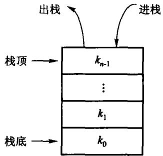
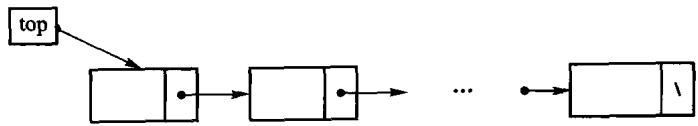
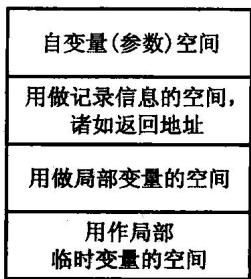
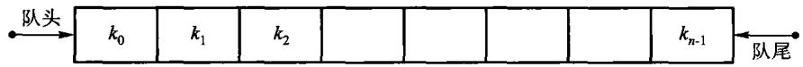
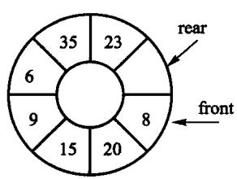

限制存取点的线性表
本章代码全部来自 code/ch03/，真编译、真跑过。
一条暗线：原书这一章的代码，有两处按印刷原样根本编译不过。
栈(stack)是限定仅在一端进行插入和删除的线性表。

| 运算 | 含义 | 时间代价 |
|---|---|---|
push(x) |
把 x 压到栈顶 | 摊还 O(1) |
pop() |
弹出栈顶并带回来；空栈返回「没有」 | O(1) |
top() |
只看栈顶，不弹出；空栈返回「没有」 | O(1) |
empty() / size() |
判空、长度 | O(1) |
「空栈返回『没有』」这四个字，C++17 里有精确的表达方式——待会儿见分晓。
入栈顺序是 1, 2, 3, 4，出栈顺序可以有哪些？
1 2 3 4 可以吗？4 3 2 1 可以吗？3 1 4 2 可以吗？用一块连续数组存元素。哪一端当栈顶？
下标 0 1 2 3 4 …
内容 [A] [B] [C] ? ? …
▲
size_ = 3 （栈顶是 C，下一个 push 写到 3）size_ 既是元素个数，也是下一个空位的下标——一个变量干两件事。
T* data_; 指向底层数组
size_type capacity_; 数组能放多少个
size_type size_; 现在放了几个（同时也是下一个空位的下标）整份实现在 code/ch03/array_stack/teaching.hpp——一个文件、一个类， 抄下来就能编译。下面几页把它拆开逐段看。
// 入栈。满了就翻倍，所以不会有「栈满溢出」这回事。
void push(const T& value) {
if (size_ == capacity_) {
grow();
}
data_[size_] = value;
++size_;
}// 扩容：申请一块两倍大的，把老元素搬过去，再把老的还回去。
// 每个元素在均摊意义下只被搬运常数次，所以 push 的摊还代价仍是 O(1)。
void grow() {
size_type next = (capacity_ == 0) ? 1 : capacity_ * 2;
T* fresh = new T[next];
for (size_type i = 0; i < size_; ++i) {
fresh[i] = data_[i];
}
delete[] data_; // 先搬完再释放旧的，顺序反了就会读到已释放的内存
data_ = fresh;
capacity_ = next;
}平摊到每次 push 就是常数——这就是摊还 O(1)。
摊还的意思：单次操作偶尔很贵（那一次要搬走全部 n 个）， 但两次扩容之间至少发生了 n 次 push，分摊下去每次仍然便宜。 注意它说的是平均，不是保证——那一次搬迁真的会卡住。
// 出栈并把元素带回来。空栈返回空的 optional，不是错误，也不打印任何东西。
std::optional<T> pop() {
if (empty()) {
return std::nullopt;
}
--size_;
return data_[size_];
}原书写的是 bool pop(T & item)——用出参带值、用返回值带成败。
问题：调用方忘了检查返回值，读到的就是那个从没被修改过的 item。 程序不崩，只是默默按错误数据继续跑。
原书【代码3.2】的顺序栈，三个成员是 int mSize、int top、T* st。
legacy.cpp:65:5: error: ‘bool arrStack<T>::top(T&)’
conflicts with a previous declarationint top 与成员函数 bool top(T&) 重名。 整个类按印刷原样进不了编译器。
同一本书第 3.1.3 节的链式栈犯了同一个错。
原书 arrStack 有析构函数，却没有拷贝构造。
$ cat drv2.cpp
int main(){ arrStack<int> a(4); a.push(7); arrStack<int> b = a; }
$ g++ -std=c++17 -fsanitize=address -g drv2.cpp -o drv2 && ./drv2
==2331703==ERROR: AddressSanitizer: attempting double-free
#0 operator delete[](void*)
#1 arrStack<int>::~arrStack()-Wall -Wextra -Wpedantic 一句警告都不给。
一个类只要自己写了析构、拷贝构造、拷贝赋值中的任意一个， 通常这三个都得写。
// 构造：先要一小块数组。容量不够时会自动翻倍，所以初值给多少都不影响正确性。
explicit ArrayStack(size_type initial_capacity = 8)
: data_(new T[initial_capacity]), capacity_(initial_capacity), size_(0) {}
// 拷贝构造：**必须自己写**。
// 不写的话编译器生成的版本会把 data_ 这根指针照抄一份，于是两个栈指向同一块
// 内存，各析构一次 —— 同一块内存被释放两次。原书 arrStack 正是漏了这个。
ArrayStack(const ArrayStack& other)
: data_(new T[other.capacity_]), capacity_(other.capacity_), size_(other.size_) {
for (size_type i = 0; i < size_; ++i) {
data_[i] = other.data_[i];
}
}结点分散在堆上，压栈只是接一个新结点。

没有「栈满」这回事——这是它与顺序栈最大的差别。
// 入栈：造一个新结点，让它指向原来的栈顶，再让栈顶指向它。
// **没有「栈满」这回事**——这正是链式栈相对顺序栈最大的差别。
void push(const T& value) {
Node* fresh = new Node;
fresh->value = value;
fresh->next = top_;
top_ = fresh;
++size_;
}// 出栈：把栈顶结点摘下来，取走它的值，再释放它。空栈返回空 optional。
std::optional<T> pop() {
if (empty()) {
return std::nullopt;
}
Node* dying = top_;
T value = dying->value;
top_ = dying->next;
delete dying;
--size_;
return value;
}| 顺序栈 | 链式栈 | |
|---|---|---|
| 存储 | 一块连续数组 | 分散结点 |
| 每个元素额外开销 | 无 | 一根指针（8 字节） |
| 栈满 | 需要扩容 | 不存在 |
| 缓存局部性 | 好 | 差 |
| 扩容时的抖动 | 有（那一次搬全部） | 无 |
结论：元素多且大小可预估 → 顺序栈；深度波动大或元素很大 → 链式栈。
后缀表达式（逆波兰式）不需要括号，也不需要优先级：
3 4 + 2 * → 压 3、压 4、弹出算 3+4=7 压回、压 2、弹出算 7*2=143 4 + 2 *读到 栈内容 动作
3 [3] 压栈
4 [3 4] 压栈
+ [7] 弹出 4 和 3, 算 3+4=7, 压回
2 [7 2] 压栈
* [14] 弹出 2 和 7, 算 7*2=14, 压回
读完 [14] 栈里唯一的元素就是结果实现见 code/ch03/expression_eval/modern.hpp，正文 3.1.4 逐条讲。
23 + (34 * 45) / (5 + 6 + 7)
中间隔着一步转换——这才是栈最典型的应用。 括号和优先级造成的「先算什么」，全靠一把栈记住。
| 遇到 | 做什么 |
|---|---|
| 操作数 | 直接输出 |
( |
入栈 |
) |
反复弹出并输出，直到遇到 (；( 弹掉但不输出 |
| 运算符 | 栈顶优先级不低于当前就反复弹出；然后当前入栈 |
| 扫描结束 | 栈里剩下的依次弹出输出 |
如果写成「高于」，同优先级时就不先弹：
1 - 2 - 3 → 转成 1 2 3 - - → 求值 1-(2-3) = 2 ✗
正确 1 2 - 3 - → 求值 (1-2)-3 = -4 ✓左结合是靠这一个符号保住的。测试里有一条专门算这个数。
1 + 2 * 3读到 输出 运算符栈 说明
1 1 []
+ 1 [+] 栈空, 直接压
2 1 2 [+]
* 1 2 [+ *] * 优先级高于 +, 不弹
3 1 2 3 [+ *]
读完 1 2 3 * + [] 依次弹出换成 1 * 2 + 3 再走一遍：读到 + 时栈顶是 *，优先级不低于它，要先弹。
实现见 code/ch03/expression_eval/modern.hpp，正文 3.1.4 有完整规则表。
递归的实现本身就是一个栈。 每次函数调用，运行栈上压入一条活动记录：

同一份递归源码，Linux / gcc 13.3 / ulimit -s 默认 8 MB：
| 构建档 | 20 万层 | 50 万层 | 100 万层 |
|---|---|---|---|
-O0（不优化） |
通过 | 段错误 | 段错误 |
-O1 + ASan/UBSan |
通过 | stack-overflow | stack-overflow |
-O2 |
通过 | 通过 | 通过 |
改成显式栈（数据压进 ArrayStack，也就是放到堆上）： 三档在 1000 万层都通过。
一端进、另一端出，先进先出(FIFO)。

optional队列两头都要动。若队头固定在下标 0，每次出队都要把后面全部前移，O(n)。
让队头也往后走——走到数组末尾就绕回下标 0，整块数组当成一个圈用。

绕回之后有个麻烦：front == rear 既可能是空、也可能是满。
原书的办法：牺牲一个槽位。
// 满的判据：rear 再往前走一格就撞上 front。那一格就是被牺牲掉的槽位。
bool full() const { return (rear_ + 1) % slots_ == front_; }上面是顺序队列（取模绕回、队满返回 false），下面是链式队列 （没有队满，靠队尾指针保持 O(1)）。
// 入队。队满返回 false——顺序队列的容量是固定的，这是它与链式队列的核心差别。
bool enqueue(const T& value) {
if (full()) {
return false;
}
data_[rear_] = value;
rear_ = (rear_ + 1) % slots_; // 走到末尾就绕回 0，取模不能漏
return true;
}
// 入队：新结点接到队尾。队列原来是空的话，它同时也是队头。
void enqueue(const T& value) {
Node* fresh = new Node;
fresh->value = value;
fresh->next = nullptr;
if (rear_ == nullptr) {
front_ = rear_ = fresh;
} else {
rear_->next = fresh;
rear_ = fresh;
}
++size_;
}没有队尾指针的话，每次入队都得从队头走到尾，O(n)。
// 出队。空队列返回空 optional，不是错误，也不打印任何东西。
std::optional<T> dequeue() {
if (empty()) {
return std::nullopt;
}
T value = data_[front_];
front_ = (front_ + 1) % slots_;
return value;
}
// 出队：摘下队头结点。摘完若队列空了，队尾指针也必须置空，
// 否则它就成了一根指向已释放内存的野指针。
std::optional<T> dequeue() {
if (empty()) {
return std::nullopt;
}
Node* dying = front_;
T value = dying->value;
front_ = dying->next;
if (front_ == nullptr) {
rear_ = nullptr;
}
delete dying;
--size_;
return value;
}链式队列出队把队列摘空时，队尾指针必须一起置空—— 否则它就是一根指向已释放结点的野指针，下一次入队会写进已释放的内存。
| 栈 | 队列 | |
|---|---|---|
| 存取点 | 一端 | 两端 |
| 次序 | 后进先出 | 先进先出 |
| 典型用途 | 递归、括号匹配、表达式求值、DFS | 排队服务、BFS、缓冲区 |
| 顺序实现的坑 | 扩容 | 绕回 + 空满判据 |
| 链式实现的坑 | 深链递归析构 | 空掉时的队尾指针 |
两者都是「限制存取点的线性表」——限制换来的是 O(1) 的操作和更简单的实现。
std::optional，不用 bool + 出参code/ch03/ 下每个单元都有 teaching_test.cpp， 先跑通，再故意改坏一处，看哪条断言变红python3 tools/check_code.py code/ch03/array_stack判据：把实现退回原书的写法，必须有一条断言会红。 写不出这样的用例，说明还没想清楚那条性质是什么。
O(n)，空间 O(n)/// 对每个位置返回右侧第一个严格更大值的位置；不存在时返回 n。
inline std::vector<std::size_t> next_greater_indices(const std::vector<int>& values) {
const std::size_t n = values.size();
std::vector<std::size_t> answer(n, n);
std::vector<std::size_t> stack;
for (std::size_t i = 0; i < n; ++i) {
while (!stack.empty() && values[stack.back()] < values[i]) {
answer[stack.back()] = i;
stack.pop_back();
}
stack.push_back(i);
}
return answer;
}在末尾放一个虚拟高度 0，把所有未结算柱子弹出。柱子 h 弹出时：
h × width/// 直方图最大矩形面积；在末尾放一个 0，统一清空仍有候选边界的栈。
inline long long largest_rectangle_area(const std::vector<int>& heights) {
for (int height : heights) {
if (height < 0) throw std::invalid_argument("histogram height must be non-negative");
}
std::vector<std::size_t> stack;
long long best = 0;
for (std::size_t i = 0; i <= heights.size(); ++i) {
const int current = i == heights.size() ? 0 : heights[i];
while (!stack.empty() && heights[stack.back()] > current) {
const std::size_t top = stack.back();
stack.pop_back();
const std::size_t left = stack.empty() ? 0 : stack.back() + 1;
const long long width = static_cast<long long>(i - left);
const long long area = static_cast<long long>(heights[top]) * width;
if (area > best) best = area;
}
stack.push_back(i);
}
return best;
}独立验证用枚举区间最小高度对拍，不用单调栈当自己的答案。
放映快捷键
→ / 空格下一页 ←上一页 Home / End首尾
N演讲者备注 O缩略图总览 F全屏 D深色
?这张帮助 Esc关闭
导出 PDF：浏览器打印（Ctrl/Cmd+P），每页一张幻灯片。